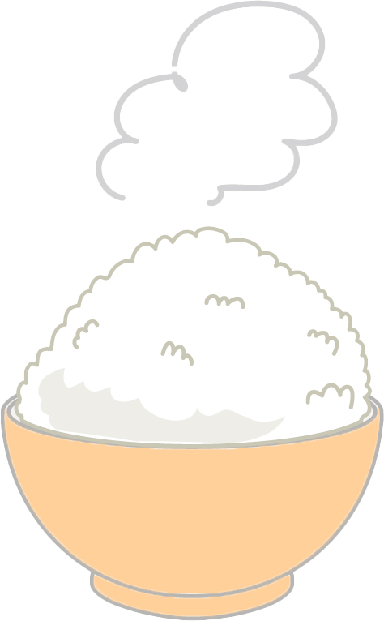

LOGO
Join
Login

식사 하셨습니까?
밥 값하는 백엔드 개발자 양동진 입니다.
[ 우리 언어에 녹아있는 밥에 의미 ]
'밥 먹었니?', '나중에 밥 한번 먹자!'와 같이 한국인에게 밥은 단순히 식(食)을 떠나 서로 간
공동체임을 뜻하는 하나의 문화로 자리잡았습니다. 한국인의 밥과 같은 진심어린 공감을 통해
사용자에게 더 나은 경험 및 서비스를 제공할 수 있는 백엔드 개발자가 되고 싶습니다.
Back-End Developer
Yang DngJin
1993. 12. 15
010. 2622. 7400
Server System Engineer
2년 6개월 경력